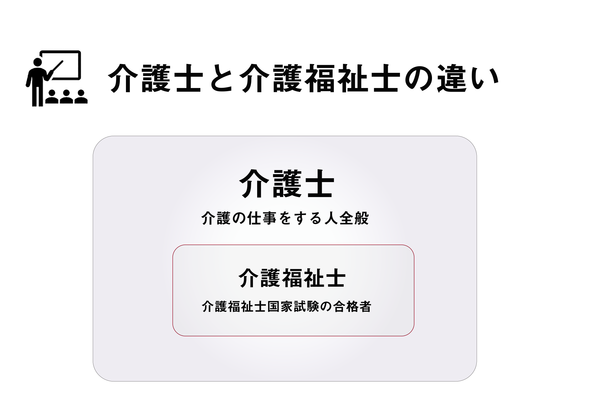
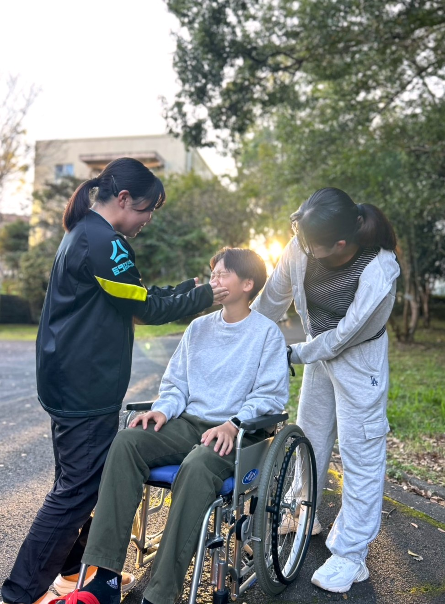

介護福祉士とは
介護福祉士の資格は、日本における介護分野で唯一の国家資格を持つ専門職です。高齢者や障害のある方々が、安心して日常生活を送れるように、身体的・精神的な支援を行うプロフェッショナルです。
また、日本の介護のレベルは、制度の整備・サービスの質とともに、世界的にも高く評価されています。
１．介護福祉士の正しい理解に向けて
1987年に国家資格として誕生した頃は、資格取得者が少なく、介護の専門性も現在ほど高くなく、業務内容は主に身体的な介護（入浴、排泄、食事など）が中心でした。
初期の教育や研修については限られており、実務経験が重視されていました。
現在では多くの介護職の方々が資格を取得しており、介護の専門性が高まっています。
業務内容が拡大し、身体的な介護だけでなく、認知症ケアや心理的支援、リハビリテーション、医療的ケア（痰の吸引・経管栄養法）など、幅広い業務を行っています。現在は実務者研修や継続教育が義務付けられており、理論と実践の両面での教育が充実しています。また、介護技術や福祉機器の進化により、より効率的で安全な介護が可能になっています。
♦介護士
簡単にいうと介護の仕事をする人全般のことです。介護業務をしている人であれば、資格や経験に関わらず介護士と呼ばれます。
♦介護福祉士
介護系資格で唯一の国家資格です。介護福祉士資格を保有している人を介護福祉士と呼びます。

| 介護士 | 介護福祉士 |
| ・無資格 ・介護職員初任者研修（旧ヘルパー2級） ・介護福祉士実務者研修 ・介護福祉士（国家資格） | ・介護福祉士（国家資格） |
２．介護福祉士取得までの方法
介護福祉士になるには、国家試験に合格して資格登録を行う必要があります。受験資格を得るためのルートは4つあり、自分の学歴や実務経験によって選択肢が変わります。
| ルート名 | 概 要 | 特 徴 |
| 養成施設ルート | 厚生労働省指定の専門学校・大学などで所定の課程を修了 | 実務経験不要。筆記試験のみでOK（実技免除） |
| 実務経験ルート | 介護職として3年以上の実務経験＋実務者研修（約450時間）修了 | 働きながら資格取得を目指す人に多い |
| 福祉系高校ルート | 福祉系高等学校を卒業 | 実技免除。筆記試験に合格すれば資格取得可能 |
| EPAルート（外国人向け） | 経済連携協定に基づく外国人介護人材 | 特定の研修・試験を経て資格取得可能 |
３．国家試験の概要
♦試験時期：毎年1月下旬
♦試験内容：筆記試験（13科目群）
♦合格率：おおよそ70〜75％（近年の平均）
４．介護福祉士の仕事内容と役割
介護福祉士の仕事は、単なる「お世話」ではなく、その人らしい生活を支える専門職としての役割を担っています。
国家資格を持つ介護のプロとして、身体的な介助だけでなく、心のケアや家族への支援、チームマネジメントまで幅広く活躍します。主な仕事内容・役割は以下のとおりです。
５．介護福祉士の働く場所
【主な活躍の場所】
| 分 野 | 施設・職場の例 | 特 徴 |
| 高齢者施設 | 特別養護老人ホーム（特養）、介護老人保健施設（老健）、有料老人ホーム | 24時間体制の介護が必要な方が多く、身体介護が中心 |
| 在宅支援 | 訪問介護事業所、居宅介護支援事業所 | 利用者の自宅に訪問して支援。自立支援や家族との連携が重要 |
| 通所サービス | デイサービスセンター、通所リハビリ | 日中のみの支援。レクリエーションや機能訓練も担当 |
| 障害者支援 | 障害者支援施設、グループホーム | 障害のある方の生活支援や社会参加の支援を行う |
| 医療機関 | 病院、診療所、緩和ケア病棟 | 医療職と連携しながら介護を提供。看護との境界も柔軟 |
| 地域支援 | 地域包括支援センター、自治体の福祉課 | 相談業務や地域の高齢者支援、介護予防活動などを担当 |
| 教 育 | 介護福祉士養成校、福祉系専門学校 | 教員や講師として後進の育成に携わる |
（上記の現場以外の活躍も）
・生活相談員：施設での相談窓口・調整役
・福祉用具専門相談員：介護用品の選定・導入支援
・介護講師・研修担当：職員教育や地域講座の講師
・福祉系企業：介護サービスの企画・運営、商品開発など
６．介護福祉士の魅力
・利用者の「ありがとう」が直接届く、やりがいのある仕事
・高齢化社会でのニーズが高く、安定した職業
・経験を積めば、ケアマネジャーや施設長などへのキャリアアップも可能
※介護福祉士は、単なる「介助者」ではなく、生活のパートナーであり、人生の伴走者でもあります。

※介護福祉士養成課程の受講科目、内容の詳細については、履修要項をご確認ください。